Магазин декоративных террариумов «Тайна террариума»
Задача
Разработать интерфейс интернет-магазина декоративных террариумов, который охватывает все ключевые этапы взаимодействия пользователя: знакомство с ассортиментом, поиск и выбор товаров, оформление заказа и получение информации о магазине.
Главная страница
Главная страница решает задачу быстрого знакомства с магазином. Пользователь сразу видит новинки, понимает специфику продукта и может в один клик перейти в каталог.
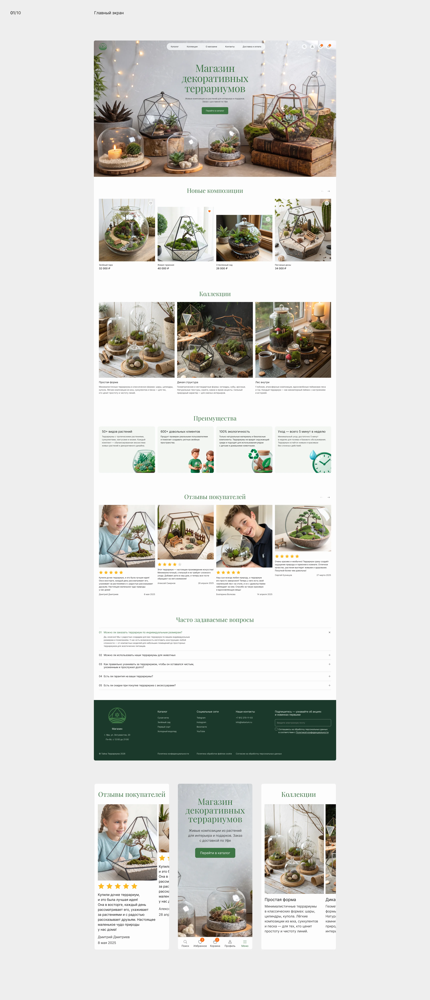
Компонент карточки товара
Карточка товара собрана в виде компонента с вариантами и состояниями. Через свойства компонента можно изменять изображение, отображение скидки, состояние избранного и другие параметры без создания отдельных элементов.
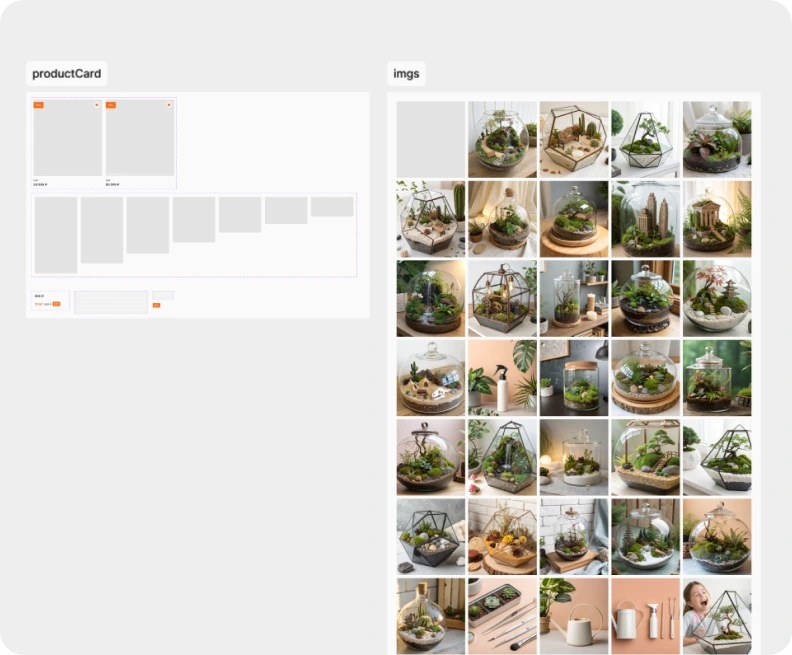


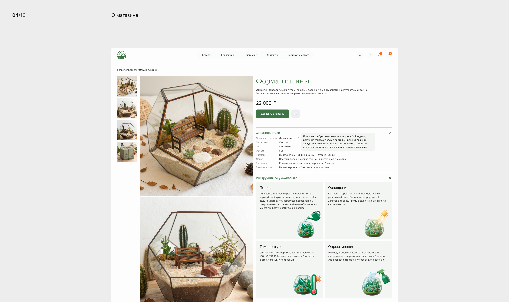
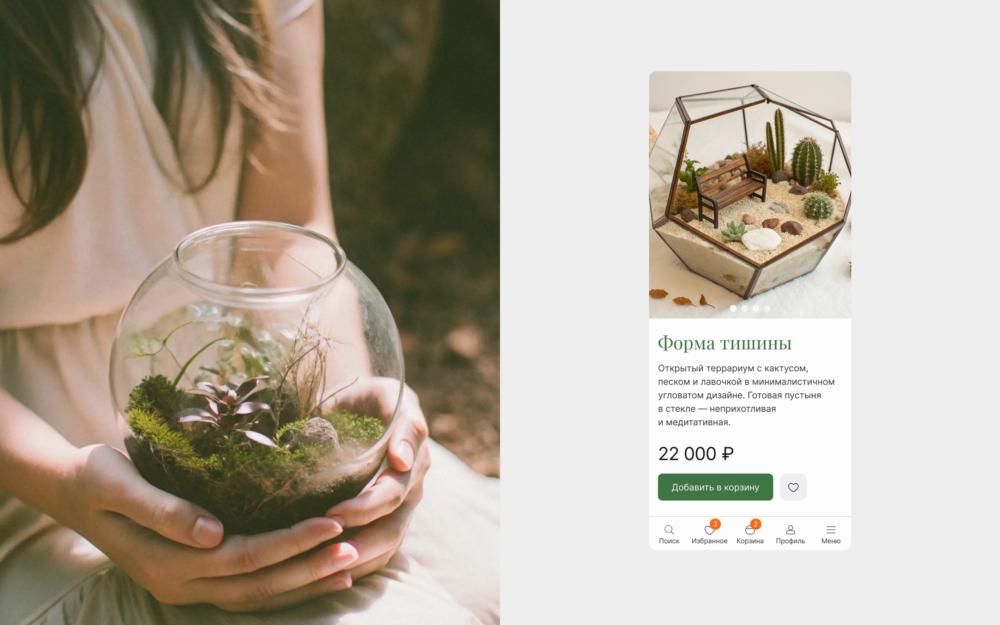
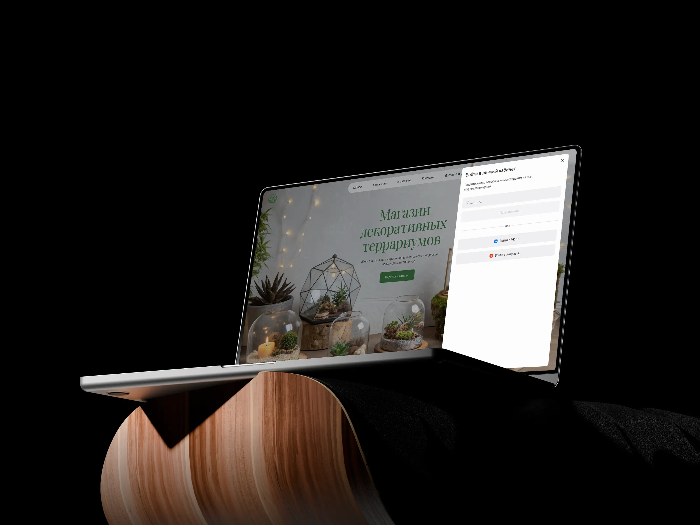
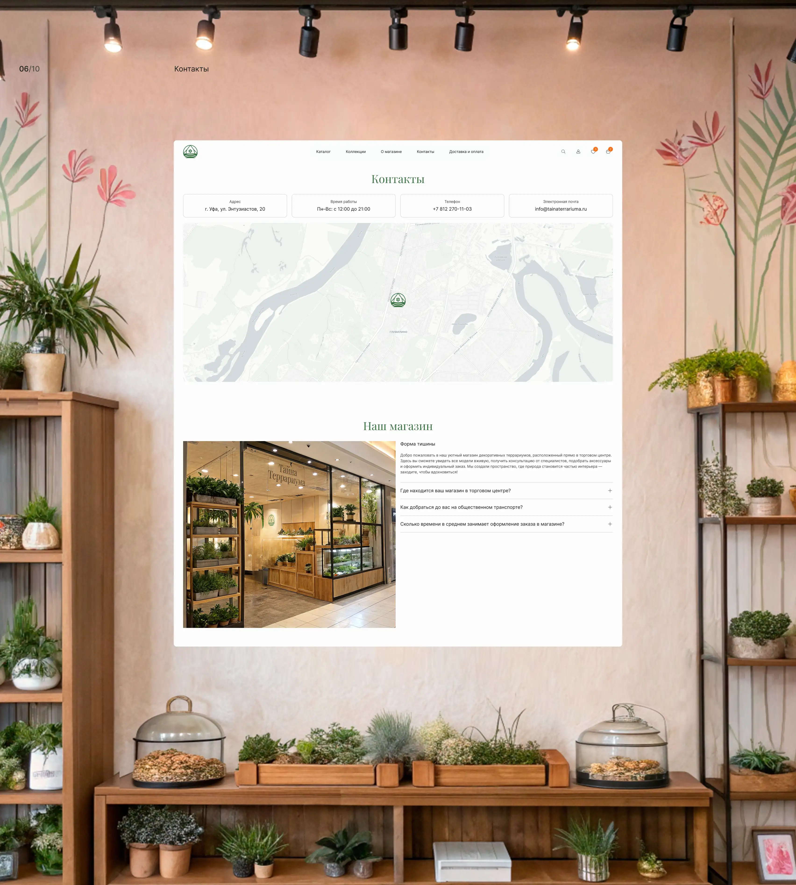
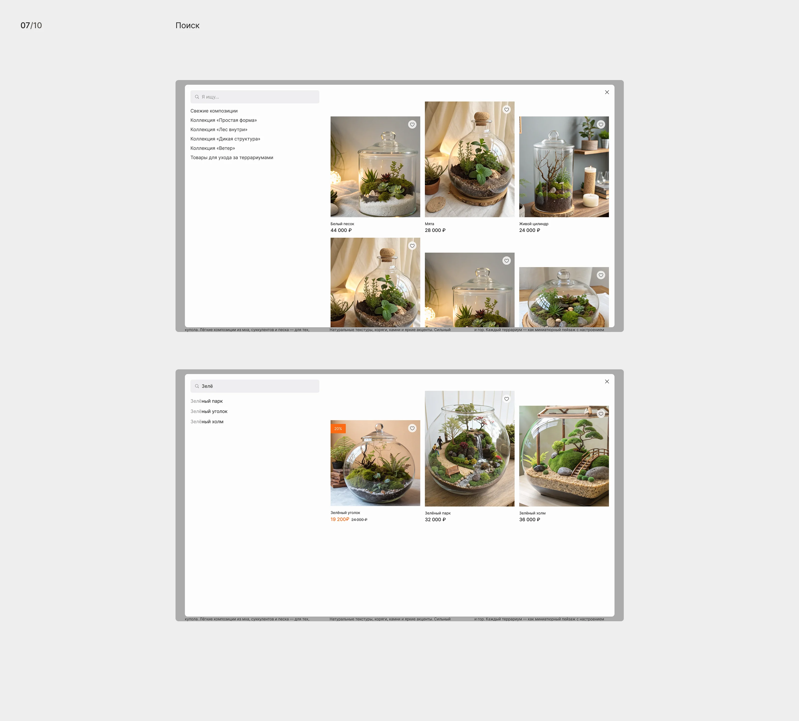
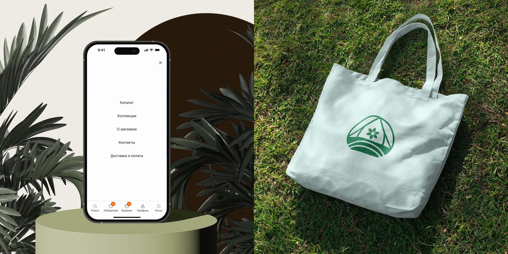
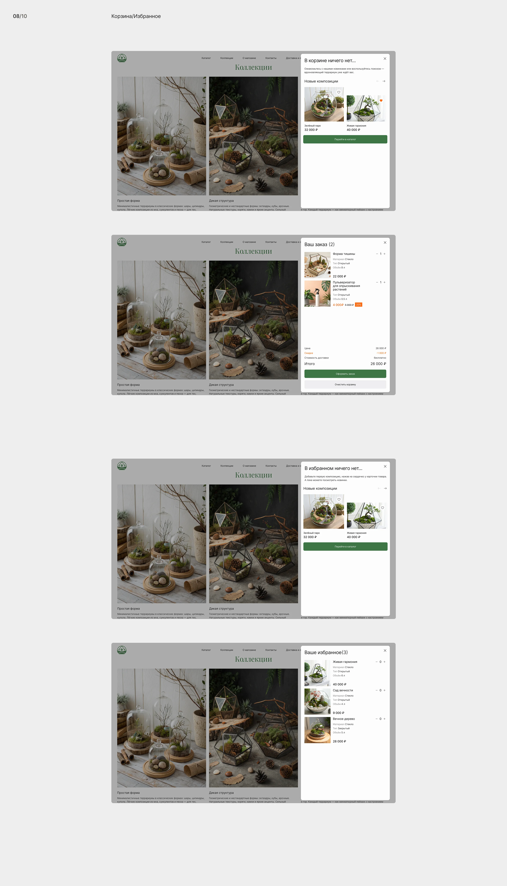
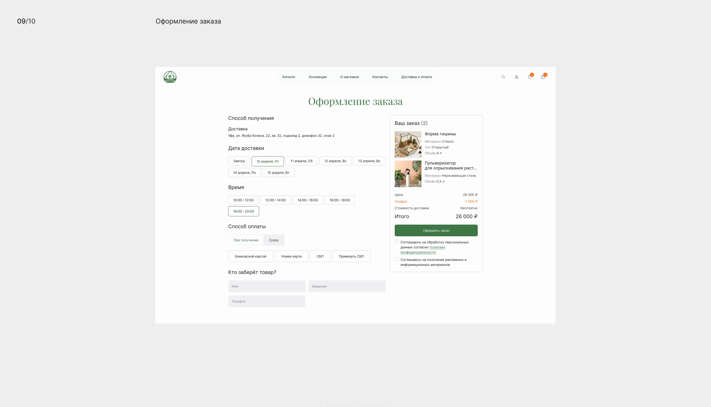
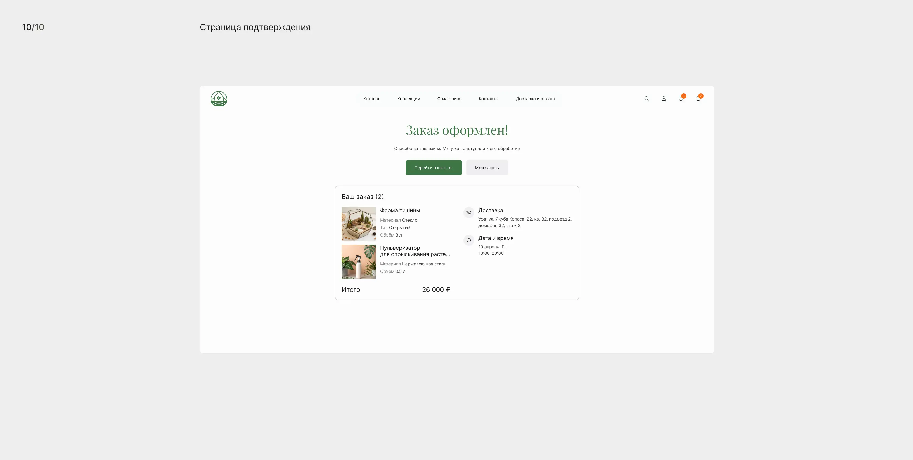
UI Kit
Для проекта разработан UI Kit, включающий кнопки, чекбоксы, тоглы, инпуты со всеми состояниями, теги, компонент поиска, фильтры и карточку товара. Каждый компонент имеет варианты и состояния, что позволяет собирать страницы из готовых элементов без создания новых.

Итог
В результате разработан целостный интерфейс интернет-магазина с проработанными пользовательскими сценариями и дизайн-системой. UI Kit охватывает все необходимые компоненты и их состояния, что обеспечивает консистентность на всех страницах и упрощает дальнейшее развитие проекта.